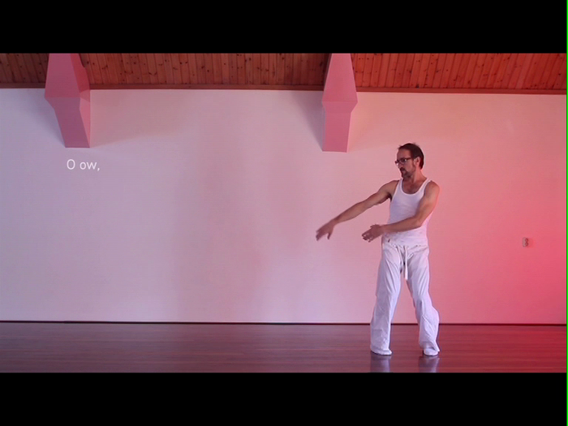
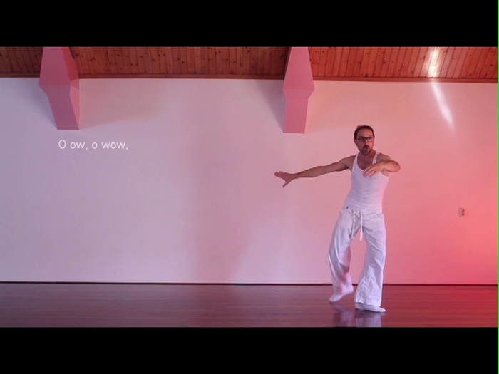
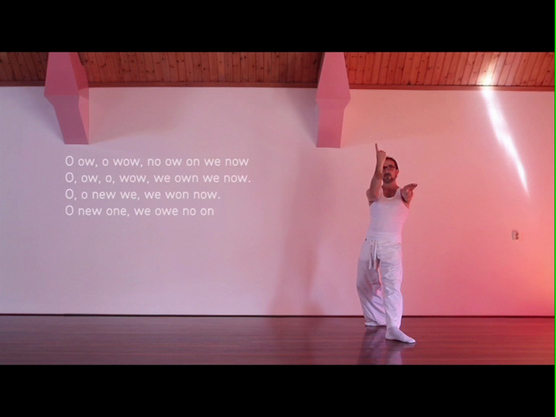
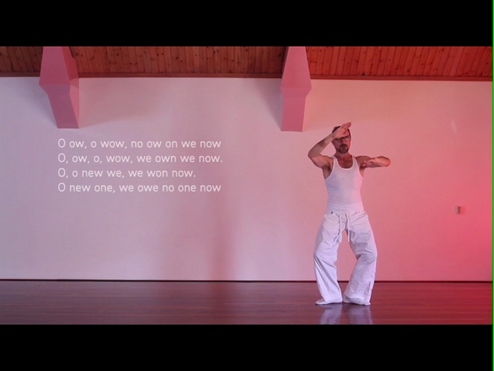
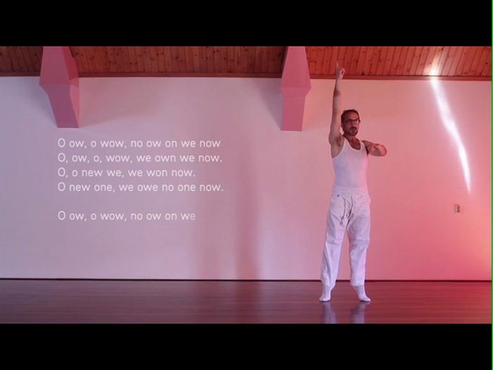
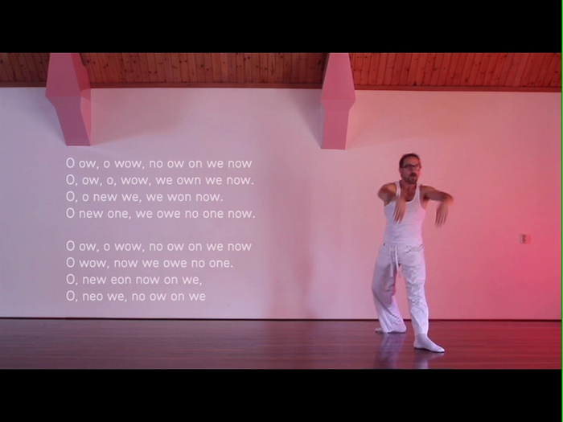

Motion Poetry
(Wildlife Collective)
A project initiated by Reinier Verhard and Micah Kessel.
"Letters are symbols. Yet the mystery becomes more subtle; these symbols meanings guide us through the evolution of our entire life. A celebration of what it means to be an evolved human being can be found in each of these letters ~ a letters consciousness. Kalligory uses the body in motion, as a vessel of expression for this human essence, these symbols of life, presented as an interactive dance poetry performance to express this narrative."
Kalligory required a system which could read the dancers movements and convert them to letters on screen. When the dancer performs a certain set of gestures, associated with a particluar letter, the letter appears on screen. I worked on this project as a programmer to try and create such a system.
We ended up using a Kinect along with OpenNI for skeleton tracking. This was done using FAAST, which allowed us to read very specific gestures and output them. The gestures were then read by a processing sketch, which in turn displayed the appropriate letter on screen. A minimum of four distinct gestures were required for each letter.
We Feel U | KABK Eindexamen Page
Made with Processing.





